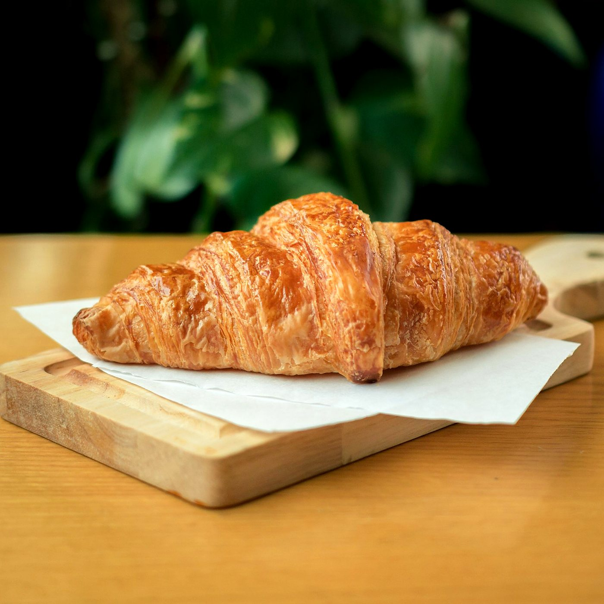
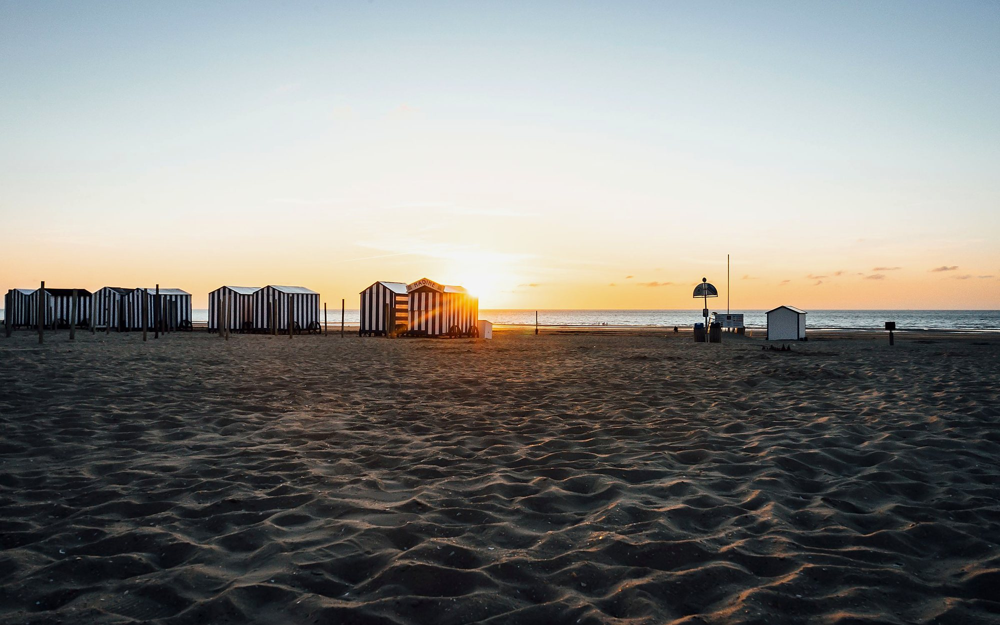
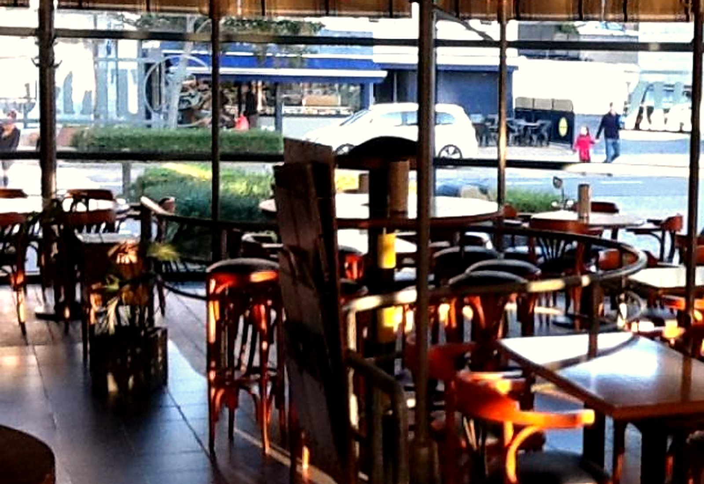
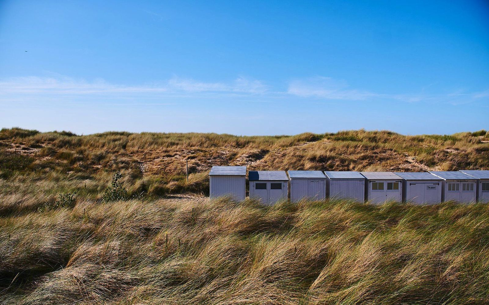

Ontbijt & brunch
Uitgebreide ontbijtformules met vers brood en pistolets, hartig en zoet beleg, warme eieren, yoghurt, koffiekoekjes, koffie en thee. Vaak met een glas cava erbij.
Sfeerfoto (stock), niet in de zaak genomen.

Oostduinkerke · Koksijde
Van een uitgebreid ontbijt tot lunch, pannenkoeken of een avond aan tafel. Een brasserie aan zee, op een kleine wandeling van het strand.
Sinds 2022 is Da Vinci een brasserie en tearoom in Oostduinkerke, aan de Leopold II-laan. Gasten komen er voor een warme sfeer en persoonlijke bediening: ’s ochtends voor ontbijt en koffie, overdag voor lunch, en tot in de vroege avond voor een maaltijd of iets te drinken.
In een toegankelijke, ongecompliceerde sfeer vindt u een uitgebreide kaart met klassieke brasseriegerechten en een ruime keuze aan dranken. Bij mooi weer zit u buiten op het terras; binnen is er airconditioning.

De kaart volgt wat u van een kustbrasserie mag verwachten, de hele dag door. Een volledige actuele menukaart met prijzen volgt nog; hieronder wat publiek bekend is.

Uitgebreide ontbijtformules met vers brood en pistolets, hartig en zoet beleg, warme eieren, yoghurt, koffiekoekjes, koffie en thee. Vaak met een glas cava erbij.
Sfeerfoto (stock), niet in de zaak genomen.
Burgers en brasserieklassiekers, dagschotels, pannenkoeken en wafels, en desserts zoals dame blanche. Er zijn ook vegetarische opties.

Koffie, bier, wijn en cocktails. Op de drankenkaart staan onder meer gin, rum en whisky. U bent ook welkom voor alleen iets te drinken.
Sfeerfoto (stock), niet in de zaak genomen.
“What a breakfast!”
“Supervriendelijk, alles top! Wij komen zeker terug. Aanrader!”
“Volledig luxe ontbijt in een mooie setting in Oostduinkerke Bad, een aanrader.”
| Maandag | Gesloten |
|---|---|
| Dinsdag | 09:00 – 21:00 |
| Woensdag | 09:00 – 21:00 |
| Donderdag | 09:00 – 21:00 |
| Vrijdag | 09:00 – 21:00 |
| Zaterdag | 09:00 – 21:00 |
| Zondag | 09:00 – 20:00 |
Deze uren komen uit recente online vermeldingen (onder meer Google-bronnen) en vragen nog een bevestiging. Bel gerust even na, vooral op feestdagen of in het laagseizoen.
In drukke weekends is reserveren aangeraden.